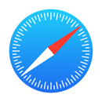

点击右上角在 浏览器 打开
苹果设备安卓设备↗↗↗
本页面是永久防失联页面
请将本页面添加到浏览器书签，方便下次访问。
微信/QQ软件内打开的用户，请点击右上角三个点跳转到任意浏览器即可打开网站。
安卓QQ浏览器：打开网页→点击底部中间“三”状态栏→收藏网址→返回浏览器主页→我的→书签收藏→完成
苹果手机浏览器：打开网页→点击底部中间状态栏→添加到主屏幕→网址信息保持默认→右上角添加→返回手机桌面→完成
电脑QQ浏览器：打开网页→鼠标右键网页内容→添加书签→完成
本网页是永久防失联的，请按照以上步骤将本页面收藏到你的浏览器书签内，可以长期稳定进入。
本平台长期稳定运行，不存在无法打开的情况，如果你是遇到网站/APP进不去的情况，出现此问题的常见情况，基本是你所在的地区性网络干扰导致无法正常进入，并不是代表所有人都进不去你网站，所以，请不必担心，建议采取以下几种方法进入。
方法一：开关手机的飞行模式或者尝试重启手机；
方法二：切换手机数据流量网络或者尝试开启WIFI网络；
方法三：部分地区由于网络原因导致，如果以上两个方法均无法正常打开网址，可以尝试前往百度搜索使用【精灵ip】或者【爱加速】等网络加速器，下载后切换IP基本就可以正常进入网站/APP了。
如果你是本站站长/合伙人，打开网站显示网址有误或网址已升级，你可以扫你自己的推广海报重新进入，或找个其他能打开的站长海报图，进入后登录你自己的账号，在会员中心-推广海报内重新生成你自己的海报图即可正常进入。
如果你是本站用户，打开网站显示网址有误或网址已升级，请与你上级站长/合伙人取得联系，获取最新网址信息或推广海报。
如果你打开APP时显示APP过期或异常提醒，请与你上级站长/合伙人取得联系，让上级站长生成最新的APP，重新下载即可正常使用。